Biography
I am a Research Fellow at Psychiatry Neuroimaging Laboratory (PNL), Departments of Psychiatry and Radiology, Harvard University.
I received my Ph.D. in Engineering from imec & Ghent University, where I was awarded the imec PhD Excellence Award. My work bridges computational imaging, foundation model, and large-scale neuroimaging analysis.
My current research focuses on developing robust computational models for structural and functional MRI, tensor-based modeling, large-scale histology-MRI integration, and AI-driven imaging biomarkers for brain injury, coma recovery, and neurodegeneration.
Selected Publications
-
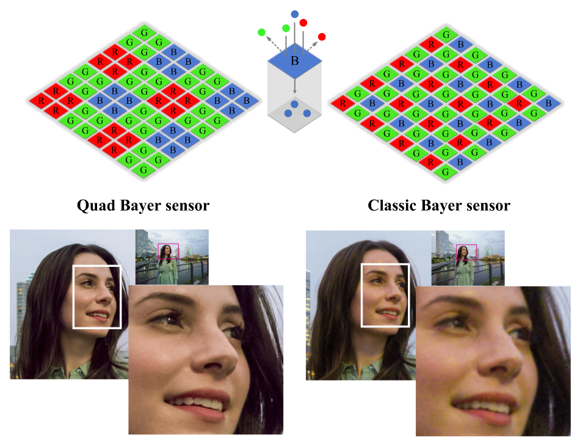Inheriting Bayer's Legacy: Joint Remosaicing and Denoising for Quad Bayer Image Sensor
-
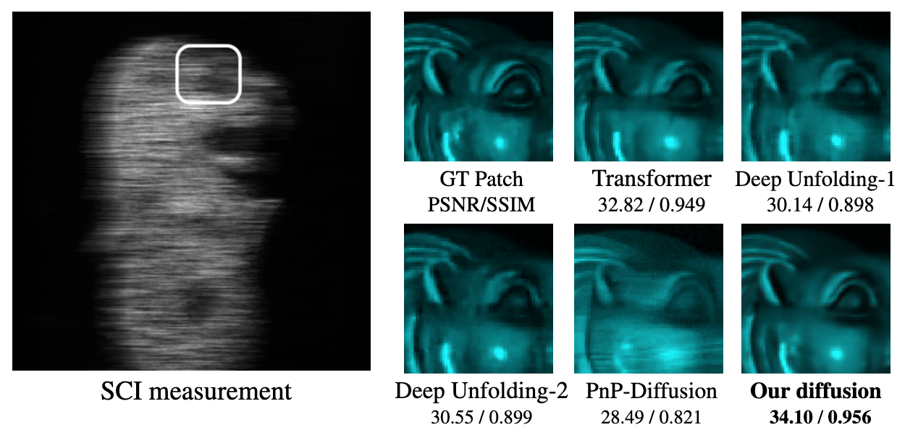
-

-
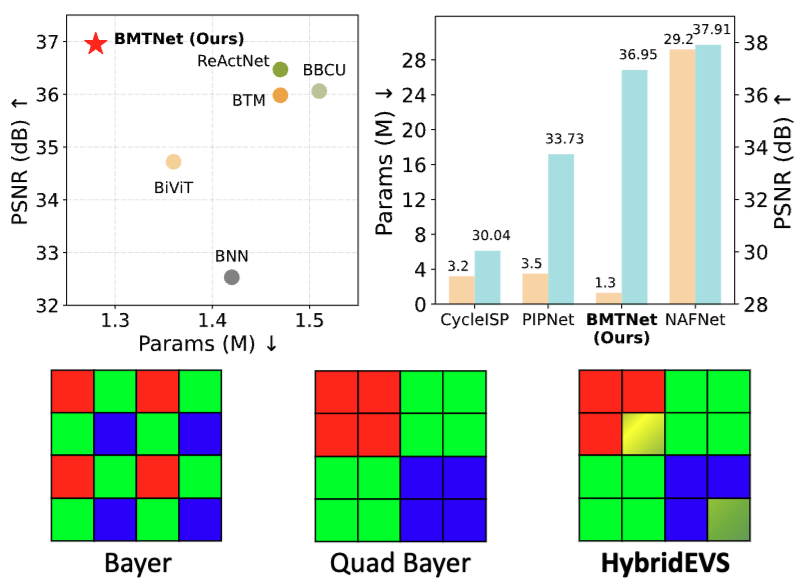
-

-
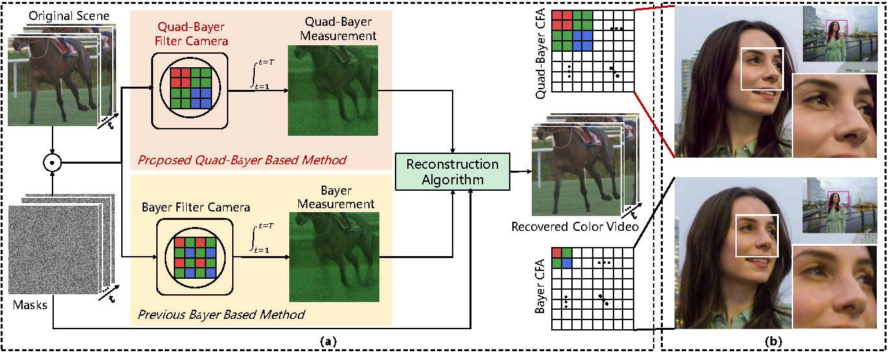
-
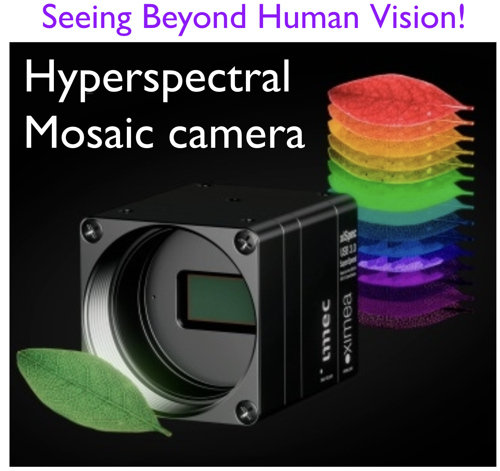Wavelength-Embedding-guided Filter-Array Transformer for Spectral Demosaicing
-

-
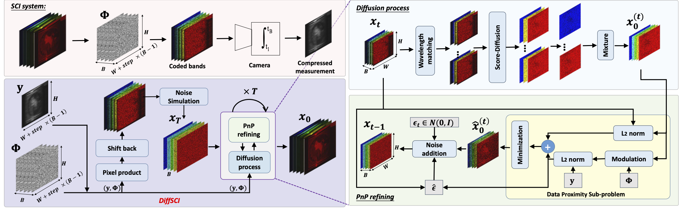
-
 Unmixing Diffusion for Self-Supervised Hyperspectral Image Denoising
Unmixing Diffusion for Self-Supervised Hyperspectral Image Denoising -
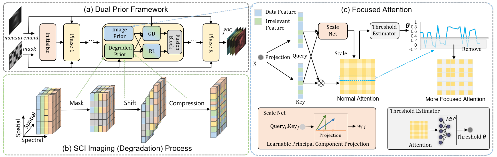
-
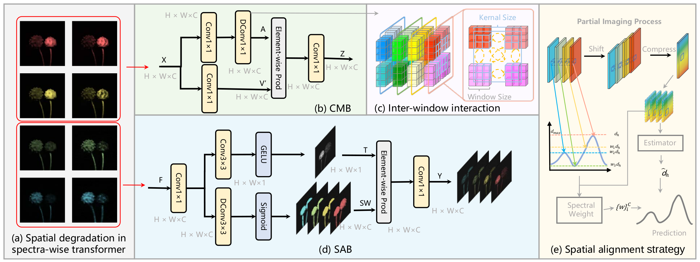
-

-
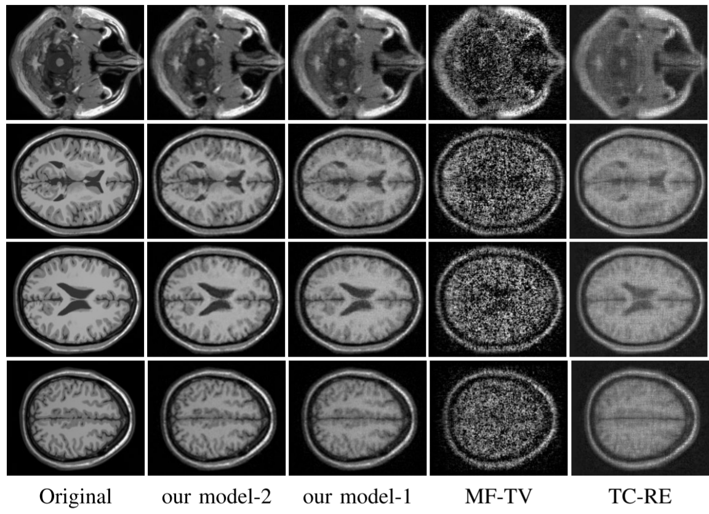Tensor Completion using Bilayer Multi-mode Low-rank Prior and Total Variation
-
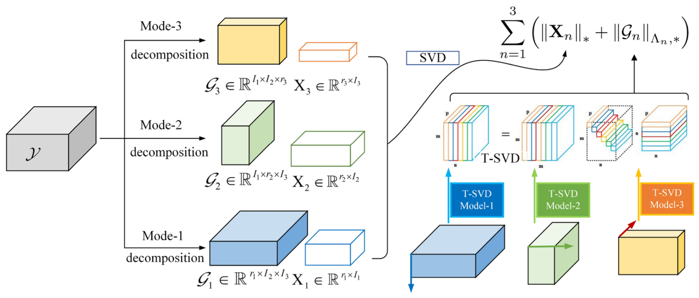Multi-mode Core Tensor Factorization based Low-Rankness and Its Applications to Tensor Completion
-
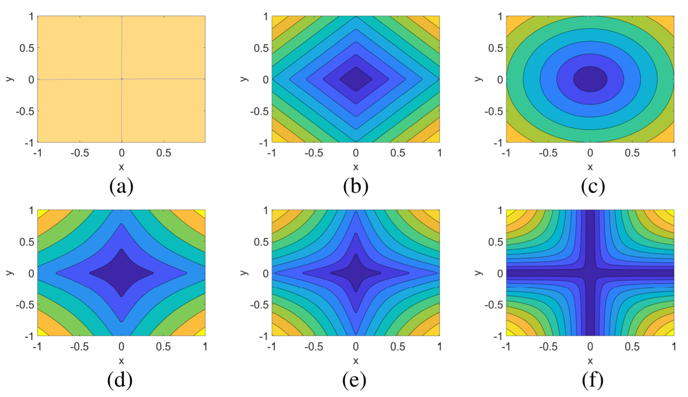Hyperspectral Image Restoration via Global L1-2 Spatial-Spectral Total Variation Regularized Local Low-Rank Tensor Recovery
-

-
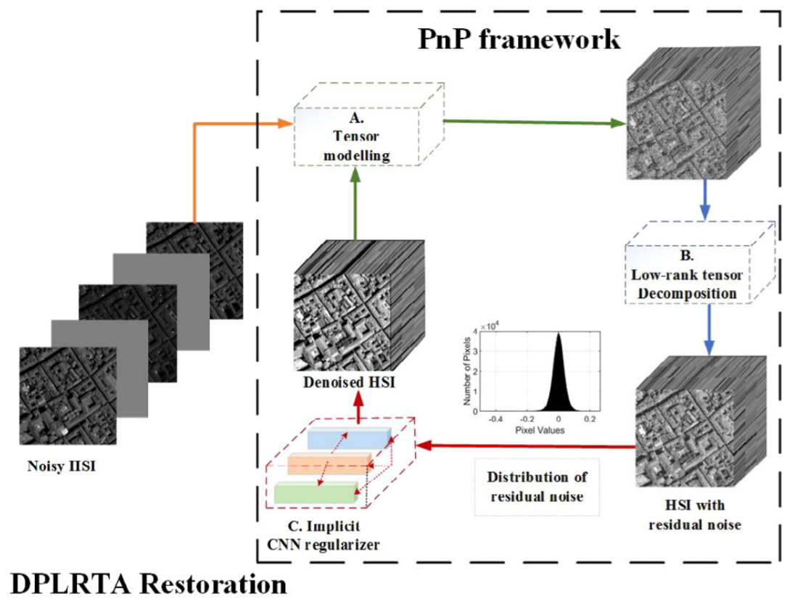
Service
Membership
- IEEE, Member
Journal Reviewer (selected)
- Journal of Computational and Applied Mathematics
- IEEE Transactions on Image Processing (TIP)
- IEEE Transactions on Neural Networks and Learning Systems (TNNLS)
- IEEE Transactions on Geoscience and Remote Sensing (TGRS)
- IEEE Transactions on Computational Imaging (TCI)
- IEEE JSTARS, IEEE Signal Processing Letters, Neurocomputing, Scientific Reports, and others.
Conference Reviewer (selected)
- ICLR, ICML, NeurIPS, CVPR, ECCV, ICCV
- AISTATS, AAAI, ACM MM
- ICME, ICASSP, IJCNN
Awards
- imec PhD Excellence Award, imec (2 per year across all global imec research institutes).
- Third place, CVPR 2024 Mobile Intelligent Photography and Imaging (MIPI) Challenge.
- Third place, ECCV 2022 MIPI Challenge.
Personal
Outside of research, I enjoy badminton and middle- to long-distance running. I also like exploring how computational imaging ideas can be communicated visually — from camera photography to scientific figures and data stories.